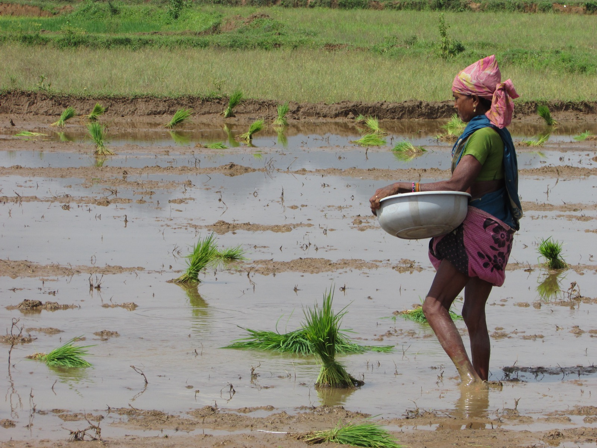
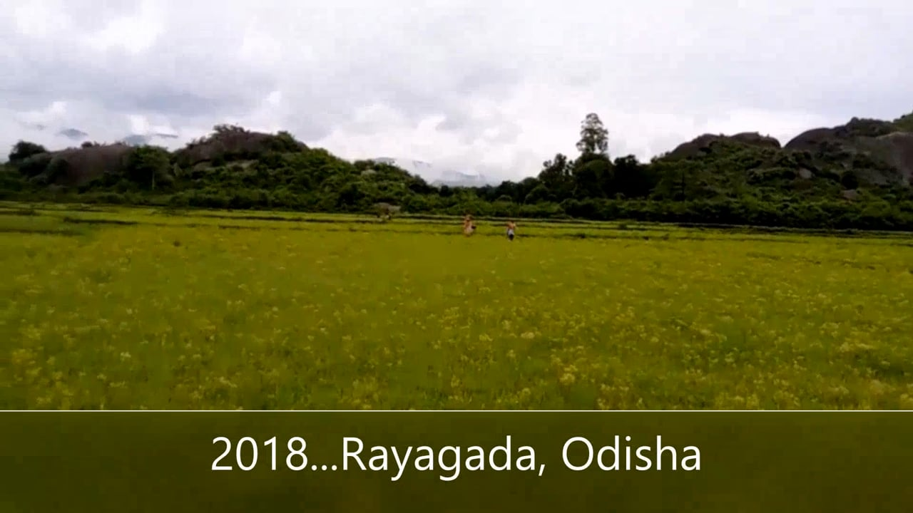
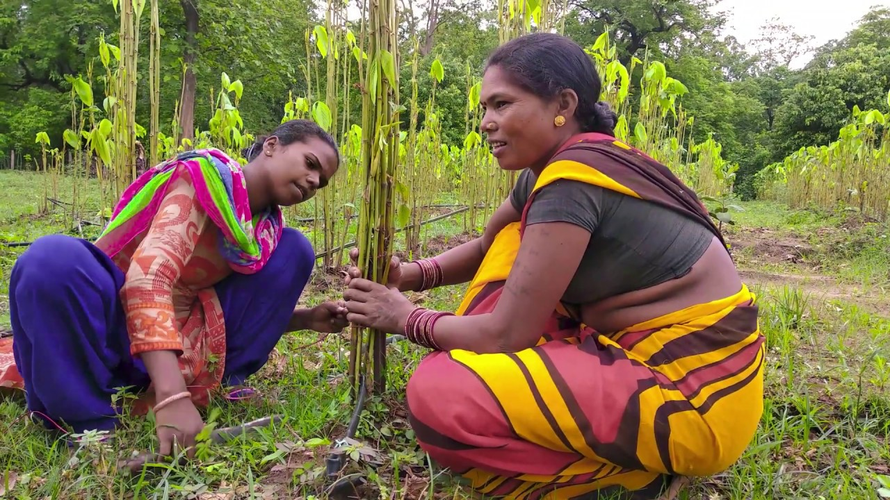
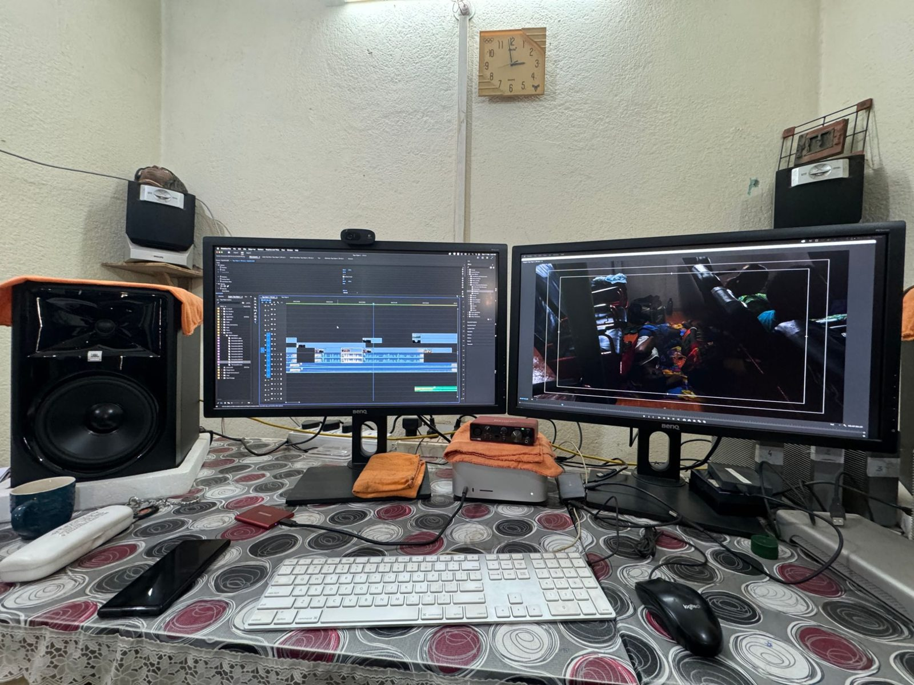
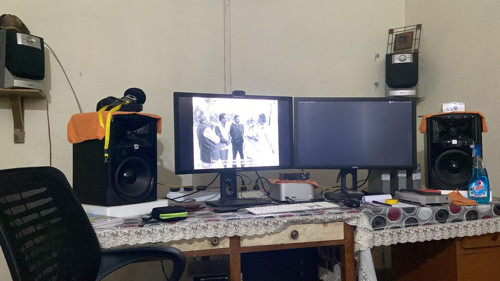
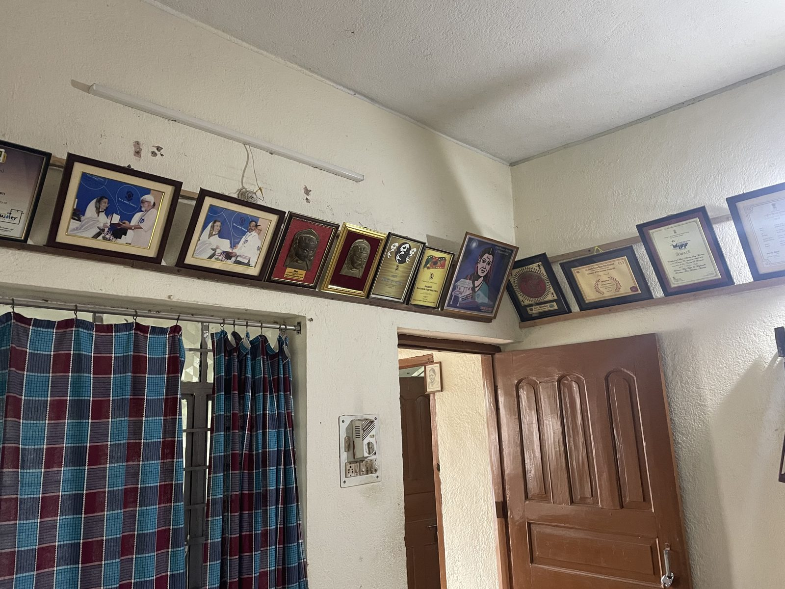

Films I have made with communities in Jharkhand, Chhattisgarh, and Odisha. These are where the archive’s questions — about authorship, participation, and whose viewpoint a document carries — were first worked out on location, before they became questions about infrastructure.

Ayangraji
Alternative agriculture, rice cultivation, and community-supported markets in Radidih, Gumla district, Jharkhand.

Envisioning Development Practice
Three practices across the Adivasi belt of Odisha, Chhattisgarh, and Jharkhand, told without narration and without a result.

Chinhari: The Young India
An Adivasi youth collective in Dhamtari, Chhattisgarh, and the care groups its young women built.

Eka Nari Sangathan
A single women’s association in Emaliguda, Rayagada, Odisha, and the solidarity its members build with one another.

Inoculating Lac
Lac cultivation and the inoculation process at the center of Bhanupratappur’s lac economy, Chhattisgarh.
From the collection
Full-length films from the catalog, streamed from their makers’ own channels. Each links to its source and to its catalog record.

Jaha Chhiti Ladi Hathi Se
Indigenous peoples’ struggle against bauxite mining.

Accumulated Injustice
Adivasi lives on the dark side of the Rourkela Steel Plant.

We Do Not Need Dust of Development
What development owes “the last person of the village” after mineral exploitation.

Turup
A neighbourhood chess game opens onto caste, class, religion, and gender in Bhopal.
At AKHRA, Ranchi
Photographs I took in AKHRA’s studio and workspace in Ranchi, where several of the films in this archive were edited. I show the rooms and the equipment only; the people who work here are not pictured.



Photographs © Arpit Gaind. Please ask before reusing them.